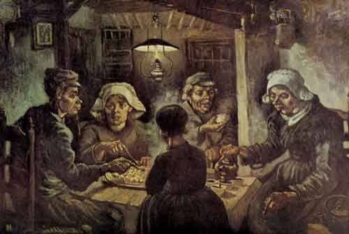
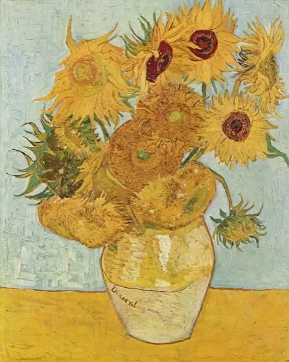

1. Son enfance et sa jeunesse
Van Gogh grandit dans une famille religieuse. Son père était pasteur et sa mère aimait beaucoup l'art et la nature.
Avant de devenir peintre, il a exercé plusieurs métiers, notamment dans le commerce d'œuvres d'art et dans le domaine religieux. Ces expériences ont contribué à développer son intérêt pour les personnes et la vie quotidienne.
2. Le début de sa carrière artistique
En 1880, à l'âge de 27 ans, il décide de se consacrer entièrement à la peinture.
Au début de sa carrière, il réalise principalement des dessins et des tableaux aux couleurs sombres, représentant des paysans et des travailleurs.
En 1885, il peint l'une de ses premières œuvres importantes : Les Mangeurs de pommes de terre.

3. Les années à Paris et à Arles
En 1886, Van Gogh s'installe à Paris, où il découvre les nouvelles tendances artistiques et rencontre plusieurs peintres impressionnistes.
En 1888, il part vivre à Arles, dans le sud de la France. Cette période est particulièrement productive : il réalise de nombreux tableaux avec des couleurs vives et lumineuses, notamment Les Tournesols.

4. Ses dernières années
Van Gogh souffre de troubles psychologiques qui affectent profondément sa vie. En 1888, après une crise, il est hospitalisé à Arles.
En 1889, il séjourne à l'asile de Saint-Rémy-de-Provence, où il continue à peindre et réalise notamment La Nuit étoilée.

En mai 1890, il s'installe à Auvers-sur-Oise, près de Paris, où il poursuit son travail artistique.
Il meurt le 29 juillet 1890, à l'âge de 37 ans.
Quelques dates importantes
| Année | Événement |
|---|---|
| 1853 | Naissance aux Pays-Bas |
| 1880 | Début de sa carrière de peintre |
| 1885 | Réalisation des Mangeurs de pommes de terre |
| 1886 | Installation à Paris |
| 1888 | Installation à Arles |
| 1889 | Séjour à Saint-Rémy |
| 1890 | Décès à Auvers-sur-Oise |